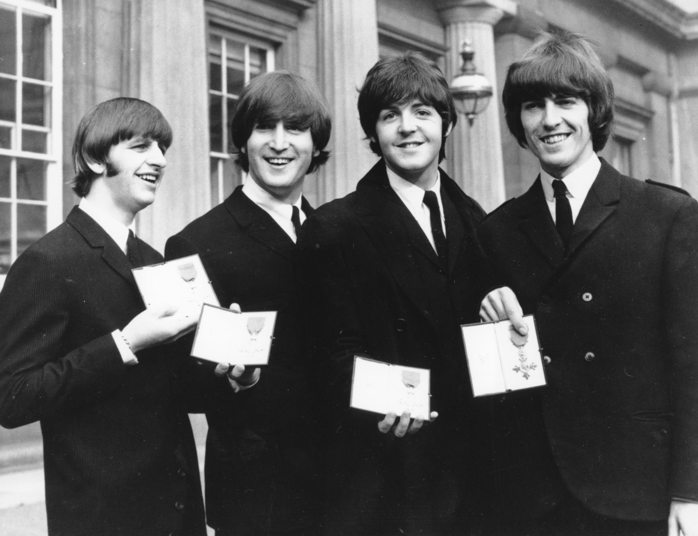

Tras la separación oficial de The Beatles el 10 de abril de 1970, Paul McCartney se embarcó
en
una carrera en solitario que, en el caso de su primer álbum, McCartney, compartiría de forma
exclusiva con su esposa, Linda McCartney. Desde su matrimonio el 12 de marzo de 1969, Paul
McCartney quiso que su mujer participara en los proyectos musicales que él llevaba a cabo,
por lo que insistió en que formara parte de Wings a pesar de las críticas de la prensa.
Para el siguiente álbum, Ram, McCartney se rodeó de más músicos, como el baterista
Denny Seiwell.
Encuentro con Ringo
Paul McCartney y Ringo Starr continúan siendo amigos. No solo ellos sino que sus mujeres,
Nancy Shevell y Barbara Bach, también tienen una cálida relación, por lo que no es extraño
verlos a los cuatro compartiendo momentos. En esta oportunidad, el bajista y el baterista de
los Beatles salieron a comer con sus respectivas esposas a un discreto restaurante de Los
Ángeles. Los paparazzi los captaron dándose abrazos y manteniendo una divertida conversación
en medio de la noche californiana.
La infancia de Paul
Paul McCartney nació el 18 de junio de 1942 en el Hospital Walton, Liverpool, Inglaterra,
donde su madre, Mary Patricia Mohin (1909-1956), trabajaba como enfermera. Su padre,
James ("Jim") McCartney (1902-1976), estuvo ausente en el nacimiento debido a su trabajo
como bombero voluntario durante la Segunda Guerra Mundial.
Tuvo un hermano menor, Michael (nacido el 7 de enero 1944). Fueron bautizados en la fe
católica de su madre, su padre fue un protestante que se volvió agnóstico. Jim McCartney,
fue vendedor, empleado de los servicios municipales de limpieza y aficionado a la música.
Sir Beatles

Hace 77 años Isabel II los incluyó en la lista de quienes recibirían la Cruz de Miembro de la
Excelentísima Orden del Imperio Británico, a pedido del líder laborista. Los fabulosos
cuatro
habían revolucionado la música, con giras mundiales y récord de ventas. Había un cambio de
orden y la política tomaba nota para conquistar el voto joven. John Lennon mostró
disconformidad desde un inicio. La versión de que habían fumado en el baño antes de la
ceremonia.